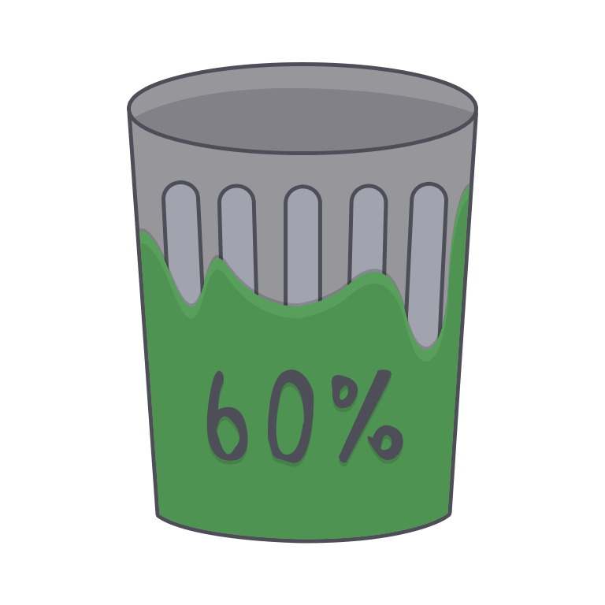
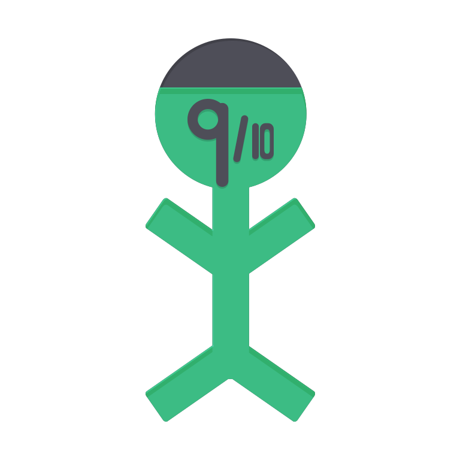
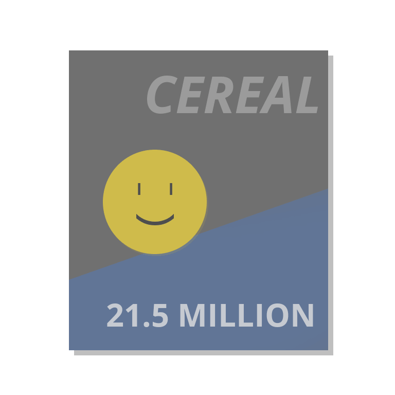
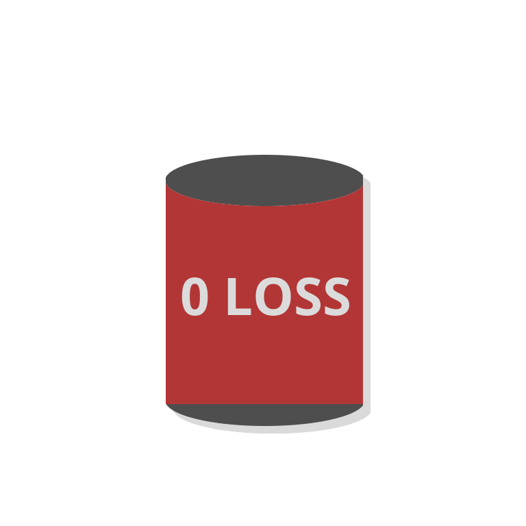
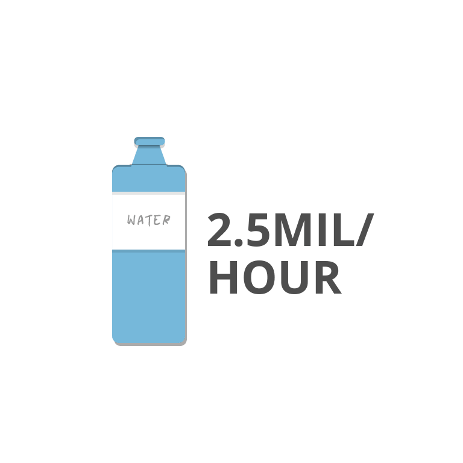

It's hard to imagine the difference one water bottle can make, but when millions of people come together to pledge to recycle, the impact is tremendous. This page contains statistics compiled to show the extent of recycling in America and how much waste is being produced. Together, we can help change some of these numbers for the better.
Note: All the supplementary graphics on this page were created by our team to help users visualize the statistics. Please ask for permission if you would like to use them.
60% of what's thrown in the trash can could be recycled.
9 out of 10 people would recycle if it were easier.
Up to 80% of a vehicle's parts can be recycled.
Composting the 21.5 million tons of food we waste every year would cut about as much pollution created by 2 million cars.
A glass class container can be fully recycled in less than thirty days. However, last year about 9 million tons of recyclable glass was thrown away.
Greater than 37% of the fiber used in paper products is recycled. This can be raised dramatically if all paper were recycled.
Recycling a stack of newspapers just 3 feet in height saves one tree.
Aluminium can be recycled with zero loss in quality or quantity making it desirable.
Americans throw away about 2.5 million recyclable plastic bottles every hour.
The statistics show that recycling in America is present, but it still has a long way to go. Our chief goal is to make more people aware of the impact they can have by waiting to find the recycling bin instead of tossing recyclable items in the trash. If you have any interest in sharing these statistics to your circle of friends, check out the pages under the "Help Out" tab to find out how you can spread the message about recycling.
Many of these statistics are preventable. By recycling more, we can start changing these numbers for the better.
We can put just the amount of damage we cause in perspective. They help us understand the direness of the situation.
We have to enact change to ensure the safety of the planet we call home. We can't afford to have these numbers grow.
While our recycling rates still need to increase, it should be noted that year by year more people recycle. We would love to continue to contribute to this effort to increase recycling.
This chart shows us that recycling rates have increased greatly in the past fifty years, going from 6.4% in 1960 to 34.5% in 2012. However, it's worth noting that recycling rates have started to plateau as well. From 2010 to 2012, recycling rates increased a mere 0.5%. While we are continuing to see growth, it would be better to see more drastic efforts, especially considering that our current recycling rates are not high enough.
While recycling rates have since grown, the data gives a representation of which countries are best at recycling. The United States' recycling rate has continued to grow over the years, but in terns of recycling, our country still lags behind. It is important to celebrate the fact that we have come so far and are one of the top countries in recycling. However, we must also recognize the fact that we are not the best and that we must try to improve. This common goal spurs not out of competition but out of a desire to leave a positive effect on the world.
While we do not have any listed, there are numerous studies conducted on recycling and its impact on the environment. For more information, you can refer to the EPA website or the website of your country's environmental protection agency if you do not live in the United States. The EPA continuously works to clean up the land and increase awareness of environmental issues in the United States. Some of their articles are listed below.